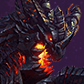

General
For general changes and/or gameplay updates, check out the official Patch Notes.
Heroes
Bug Fixes
- Army of the Dead Ghouls no longer stop following Arthas when affected by certain Abilities.

Deathwing
Bug Fixes
- Deathwing's Energy tooltip while in Dragonflight now is correctly called Energy instead of Mana.
Bug Fixes
- Fixed an issue where Garrosh would fail to throw moving targets.
Bug Fixes
- Imperius's Flash of Anger will now properly trigger if it kills a target.
- Clarified Flash of Anger's tooltip to reflect that it deals damage to the target as well as all targets around them.
- Fixed an issue where players were unable to issue attack commands while using Celestial Charge, causing them to auto-acquire nearby targets.
Bug Fixes
- Crowd Control effects on Nazeebo's Zombie Wall with Dead Rush no longer causes Zombie Wall to become unresponsive.
Bug Fixes
- Fixed an issue where Weighted Pustule was removed by Unstoppable.
Updates
Trait
-
Resonance Beam
- Tassadar's Basic Attack is a long range channeled beam that deals 14 damage every .25 seconds and Slows its target for 10%. While channeling, your Basic Attack damage and Mana Regeneration increase by 25% a second, to a maximum of 100% bonus. While fully charged, gain an additional 3 mana per second. This bonus is lost after 6 seconds of not channeling.
Basic Abilities
-
Shock Ray [Q]
- After a .375 second cast, channel a fast moving electric beam that deals 280 damage and slows all enemies in a line by 25% for 2 seconds.
- Mana: 55 Mana.
- Cooldown: 7 seconds.
-
Psionic Storm [W]
- Create a storm of psionic energy at the targeted location, dealing 38 damage every .5 seconds to enemies within its area for 3 seconds. This damage increases by 10% for each consecutive hit, to a maximum of 50% increased damage.
- Mana: 60 Mana.
- Cooldown: 8 seconds.
-
Force Wall [E]
- After a .5 second delay, create a wall that blocks all units from moving through it for 2 seconds.
- Mana: 70 Mana.
- Cooldown: 21 seconds.
Heroic Abilities
-
Archon [R1]
- Transform into a powerful Archon, gaining 40% of your maximum health as a shield and empowering Basic Attacks for 12 seconds. Empowered Basic Attacks deal more damage, splash in a small area, and reduce the Spell Armor of Heroes by 20 for 2 seconds. While in Archon form, Resonance Beam is fully charged.
- Mana: 100 Mana.
- Cooldown: 90 seconds.
-
Black Hole [R2]
- After a .5 second cast, launch a Black Hole that travels in a long line. While travelling, the Black Hole quickly pulls enemy Heroes towards its center. Touching the center deals 310 damage and stuns for 1.25 seconds.
- Mana: 80 Mana.
- Cooldown: 70 seconds.
Talent
-
Level 1
-
Static Charge [Q]
- Quest: Heroes hit by Shock Ray permanently increase its damage by 4 and grant 33% Resonance Beam charge.
- Maximum of 200 additional damage.
-
Psi-Infusion [W]
- Increase Psionic Storm's range by 33%. Each non-structure enemy hit by Psionic Storm restores .5 mana, increased to 5 against Heroes.
-
Khaydarin Amulet [Trait]
- Quest: Resonance Beam charges 50% faster.
- Reward: After remaining at full charge for 80 seconds, Resonance Beam bounces to hit 1 additional target for 50% damage.
- Reward: After remaining at full charge for 160 seconds, Resonance Beam bounces to hit 2 additional targets for 50% damage.
-
Static Charge [Q]
-
Level 4
-
Induction [Q]
- Casting Shock Ray increases Tassadar's move speed by 15% for 3 seconds. If an enemy Hero is hit, increase this bonus by 10%.
-
Electric Fence [E]
- Enemies near Force Wall take 46 damage every .5 seconds and are slowed by 35%.
-
Plasma Shield [Trait]
- While Resonance Beam is fully charged, gain a shield equal to 3% of max health every second. Stacking up to 15% maximum health.
-
Induction [Q]
-
Level 7
-
Beam Alignment [Q]
- When Resonance Beam is fully charged, your Basic Attack range is increased by 1 and the cooldown of Shock Ray refreshes 100% faster.
-
Psionic Echo [Q/E]
- Casting Psionic Storm causes your next Shock Ray within 3 seconds to cost 30 mana and create a Psionic Storm on the first Hero it hits.
-
Arc Discharge [Trait]
- After reaching full charge, the next instance of Resonance Beam damage creates a Psionic Storm at the target's location. This effect has a 20 second cooldown that decays twice as fast while Resonance Beam is at full charge.
-
Beam Alignment [Q]
-
Level 13
-
Feedback [W/Trait]
- On targets afflicted with Psionic Storm, Resonance Beam's slow is increased to 60% and it also reduces Physical Armor by 25.
-
Shadow Walk [Active]
- Activate to gain unrevealable Stealth, 40% movement speed and 25 Armor for 1.5 seconds. 60 second cooldown. Can be cast while channeling Shock Ray or Black Hole.
-
Oracle [Active]
- While stationary, gain 30 Spell Armor for .75 seconds and heal for 12 health each second. Activate to channel for up to 4 seconds, revealing a gradually increasing area anywhere on the map. 45 second cooldown.
-
Feedback [W/Trait]
-
Level 16
-
Thermal Lance [Q]
- The first enemy Hero hit by Shock Ray takes 8% of their maximum health as damage.
-
Psychic Shock [W]
- Psionic Storm deals damage 25% faster.
-
Executor's Will [Active]
- Activate to gain full Resonance Beam charge, 15 Spell Power, and cause Ability cooldowns to refresh 25% faster. This effect lasts as long as Resonance Beam is fully charged. 60 sec cooldown.
-
Thermal Lance [Q]
-
Level 20
-
Twilight Archon [R1]
- Basic Attacks while in Archon form increase its duration by 2 seconds.
-
Kugelblitz [R2]
- Each Hero hit by Black Hole creates a Psionic Storm at their location.
-
Force Barrier [E]
- Increases the range of Force Wall by 50%, its duration by .5 seconds, and reduces its cooldown by 10 seconds.
-
Khala's Gift [Passive]
- Gain 4 spell power for yourself and each nearby ally Hero, up to 20. Your total bonus is shared with all contributing allies.
-
Twilight Archon [R1]
Developer Comment: We've been teasing the Tassadar rework for a long time and it's finally here! Tassadar was previously considered a support Hero, but we felt there was a disconnect between his kit/playstyle and the core fantasy of a High Templar or the other Protoss magic users. Because of this, we've re-imagined Tassadar from the ground up as an ability based Ranged Assassin, similar to characters like Kael'thas and Gul'dan. He retains his Psionic Storm, Force Wall and Archon abilities and has gained two new abilities: Shock Ray and Black Hole. His talent tree has also been radically transformed, giving him a slew of powerful new ways to play. We're very excited to finally get Tassadar into your hands and hope you all enjoy the rework as much as we have!
Bug Fixes
- Fixed an issue where Tracer's A.I. would sometimes stop using her weapons to auto-attack targets.
Updates
Base
- Health reduced from 2200 to 2080.
- Health Regeneration reduced from 4.58 to 4.33.
Developer Comment: We're happy with how Xul's rework has gone overall in improving his gameplay and talent diversity. He is, however, overperforming, so while we wait for more data, we're doing a reduction in the Health he gained to bring him more in line.
Bug Fixes
- Fixed an issue where Corpse Explosion did not link to an ability in the Death Recap.
Bug Fixes
- Zarya's To The Limit no longer causes Zarya's weapon beam to appear shorter at certain energy levels.